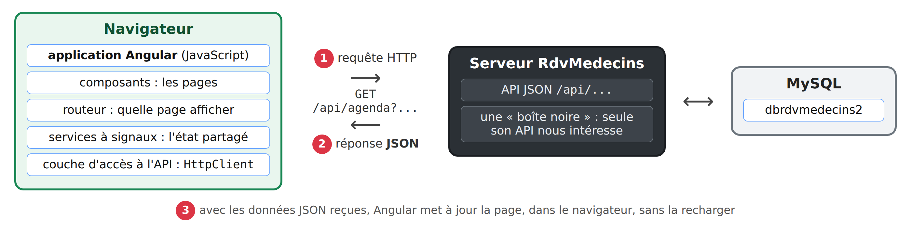
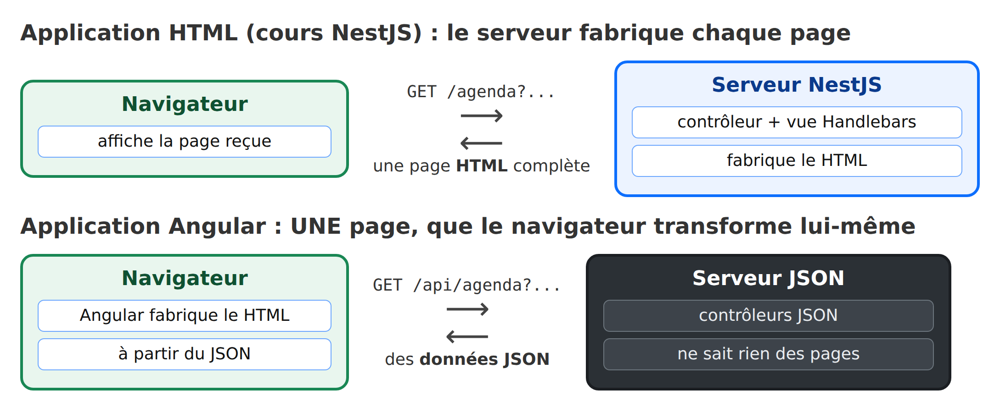

1. Introduction
Le PDF du document est ICI.
Les codes du document sont ICI.
Ce document est un produit de l'IA Claude d'Anthropic. Il fait suite au cours Introduction étape par étape au framework web NestJS, dont il change le point de vue :
- dans le cours [NestJS], c'est le serveur qui fabrique les pages HTML (moteur de vues [Handlebars]) ; le navigateur se contente de les afficher ;
- dans ce cours, les pages sont fabriquées dans le navigateur, par une application [Angular] ; le serveur, devenu un simple serveur JSON, ne fournit plus que des données.
Les pages de l'application, elles, ne changent pas : ce sont celles de l'application [RdvMedecins] déjà présentées avec les autres frameworks (connexion avec captcha, agenda d'un médecin, fenêtre de réservation, espace du patient, gestion des médecins et des clients, création d'un compte, français et anglais).
Le document suit la même progression que ses prédécesseurs : d'abord de nombreux petits exemples, chacun centré sur une notion d'[Angular], puis une étude de cas complète, le client [Angular] de l'application [RdvMedecins], dont tous les fichiers sont commentés. Il reprend le plan du cours Introduction étape par étape au framework Vue.js : le lecteur qui connaît [Vue.js] retrouvera les mêmes exemples, écrits à la manière d'[Angular]. [Angular] étant un framework plus riche, les exemples sont plus nombreux : 25 au lieu de 20.
Un cours existe déjà sur ce sujet : Un exemple de client / serveur Angular / NestJS (2026), qui étudie à la fois le serveur et le client. Le présent document s'en distingue par sa démarche : le serveur y est une boîte noire, dont seule l'API JSON nous intéresse, et l'on apprend [Angular] pas à pas, avant de s'attaquer au client complet.
1.1. La place d'Angular dans une application web
L'application a deux parties, qui ne se parlent que par des requêtes HTTP :

- 1 : l'application [Angular], exécutée par le navigateur, envoie une requête HTTP au serveur, par exemple [GET /api/agenda?idMedecin=1&jour=2026-10-05] ;
- 2 : le serveur répond par des données JSON : l'agenda de ce médecin, ce jour-là. Il ne fabrique aucune page ;
- 3 : avec ces données, [Angular] met à jour la page affichée, dans le navigateur, sans la recharger.
Le schéma suivant compare les deux architectures :

Le navigateur ne charge qu'une seule page HTML, presque vide, au démarrage. Tout le reste est fabriqué par du code [JavaScript] : c'est ce qu'on appelle une application à page unique (SPA, pour [Single Page Application]). Quand l'utilisateur clique sur un lien interne, aucune page n'est demandée au serveur : le routeur d'[Angular] change l'adresse affichée et remplace le contenu de la page.
[Angular] est un framework créé par Google. Sa première version, [AngularJS] (2010), a été entièrement réécrite en 2016 : c'est cette réécriture, en [TypeScript], qu'on appelle aujourd'hui simplement [Angular], et qui sort une nouvelle version majeure tous les six mois. Il repose sur trois idées :
- les composants : l'interface est découpée en morceaux réutilisables (une barre de navigation, un champ de formulaire, une fenêtre de confirmation...). Un composant est une classe [TypeScript], associée à un template HTML et à un style CSS ;
- la réactivité, fondée sur les signaux : les données d'un composant sont rangées dans des signaux. Quand l'un d'eux change, [Angular] met à jour, tout seul, les endroits de la page qui l'affichent. On n'écrit jamais de code qui modifie directement la page ;
- l'injection de dépendances : les composants ne fabriquent pas eux-mêmes les objets dont ils ont besoin (l'accès au serveur, l'utilisateur connecté, la langue...) : ils les demandent, et [Angular] les leur fournit. C'est le mécanisme que le cours [NestJS] a déjà présenté côté serveur - [NestJS] s'en est d'ailleurs inspiré.
À la différence de [Vue.js], [Angular] est un framework « tout compris » : routeur, formulaires, client HTTP, animations, tests sont fournis par l'équipe d'[Angular] elle-même, avec une manière recommandée de les utiliser.
Nous utiliserons [Angular] 22, avec son écriture la plus récente : composants autonomes ([standalone]), signaux, nouvelle syntaxe des templates ([@if], [@for]), formulaires à signaux, et détection des changements sans [zone.js] ([zoneless]), qui est celle d'[Angular] 22 par défaut.
1.2. Les outils utilisés
Les exemples ont été écrits et testés avec les outils suivants (leur installation est décrite en annexe) :
- [Node.js] 24 (ou 22.22.3 au moins : c'est l'exigence d'[Angular] 22) et son gestionnaire de paquets [npm] ;
- l'éditeur [Visual Studio Code], avec l'extension [Angular Language Service] ;
- un navigateur récent ([Chrome], [Firefox], [Edge]), si possible avec l'extension [Angular DevTools] ;
- l'outil en ligne de commande [curl], qui affiche les réponses HTTP brutes ;
- le SGBD [MySQL] (ou [MariaDB]), par exemple celui de [Laragon] sous [Windows] : il est nécessaire au serveur JSON, à partir du chapitre qui le présente.
Les bibliothèques sont celles des fichiers [package.json] : [Angular] 22.2 (le cœur, le routeur, les formulaires, le client HTTP), l'outil en ligne de commande [Angular CLI] (commande [ng]), [RxJS] 7.8 (les observables), [ngx-translate] 18 (les langues), [TypeScript] 6.0, [Bootstrap] 5.3.
1.3. Les exemples
Les codes du document sont rangés dans trois dossiers :
Le dossier des exemples est un espace de travail [Angular] ([workspace]) : il contient vingt-cinq petites applications, une par exemple, qui partagent les mêmes bibliothèques :
On installe les bibliothèques une seule fois, dans une console ouverte sur le dossier [exemples-angular] (dans [VS Code] : menu Terminal / Nouveau terminal) :
puis on lance un exemple, en donnant son nom :
Le serveur de développement d'[Angular] compile l'exemple et le sert sur le port 4200 : on l'ouvre à l'adresse http://localhost:4200/. Ce serveur n'a pas besoin d'être relancé quand on modifie un fichier : chaque fichier enregistré est aussitôt recompilé, et la page du navigateur se met à jour d'elle-même. On l'arrête par [Ctrl-C] dans la console, avant de lancer l'exemple suivant (un seul exemple à la fois peut occuper le port 4200).
Les exemples 22 à 25 interrogent le serveur JSON [RdvMedecins] : il faudra alors l'avoir installé et lancé, comme expliqué au chapitre qui lui est consacré.
1.4. Contenu du document
Chapitre | Contenu | Exemples |
Premiers pas | un espace de travail Angular, les signaux, les templates, les événements, les formulaires (ngModel, formulaires à signaux, formulaires réactifs), la validation, les pipes | 01 à 09 |
Les composants | entrées, sorties, model(), projection de contenu, cycle de vie, services et injection de dépendances, directives, fenêtre de confirmation | 10 à 16 |
Le routage | le routeur, les gardes de navigation | 17 et 18 |
Observables et état partagé | RxJS, les services à signaux | 19 et 20 |
Internationalisation | une application en français et en anglais | 21 |
Le serveur, une boîte noire | installation du serveur JSON, son API, exemples curl | - |
Dialoguer avec le serveur | HttpClient, connexion et cookie, intercepteur, couche d'accès à l'API, httpResource, erreurs du serveur | 22 à 25 |
Étude de cas | le client Angular de l'application RdvMedecins | - |
Déploiement | le client compilé, servi par le serveur JSON | - |
Chaque exemple est présenté avec son code complet, commenté ligne par ligne, et une copie d'écran de son exécution. Les codes sont eux-mêmes abondamment commentés : leurs commentaires font partie du cours.